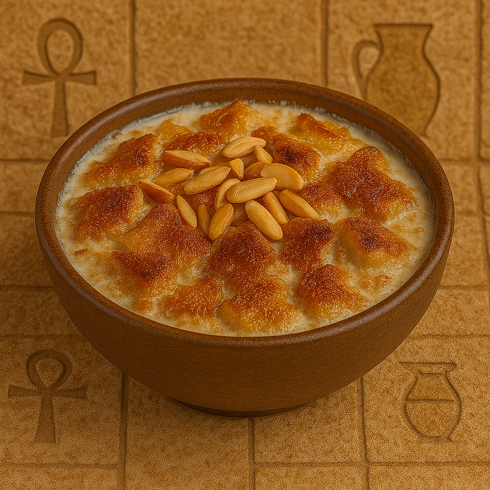

Egyptian Bread Pudding
Om Ali is a warm and comforting Egyptian dessert made with layers of baked pastry, milk, cream, and a mixture of nuts and raisins. It’s baked until golden and bubbly – the ultimate indulgence!
Ingredients:
- 1 package puff pastry or croissant pieces (baked and broken into chunks)
- 2 cups milk
- 1/2 cup cream
- 1/2 cup sugar
- 1/4 cup raisins
- 1/4 cup chopped nuts (almonds, pistachios, walnuts)
- 1 tsp vanilla
- Pinch of cinnamon (optional)
Instructions:
- Preheat oven to 180°C (350°F).
- In a baking dish, spread the pastry pieces, then sprinkle with raisins and nuts.
- In a saucepan, heat milk, cream, sugar, and vanilla until just warm.
- Pour mixture over the pastry. Let it soak for 5 minutes.
- Bake for 20–25 minutes until golden and bubbling.
- Serve warm and enjoy!